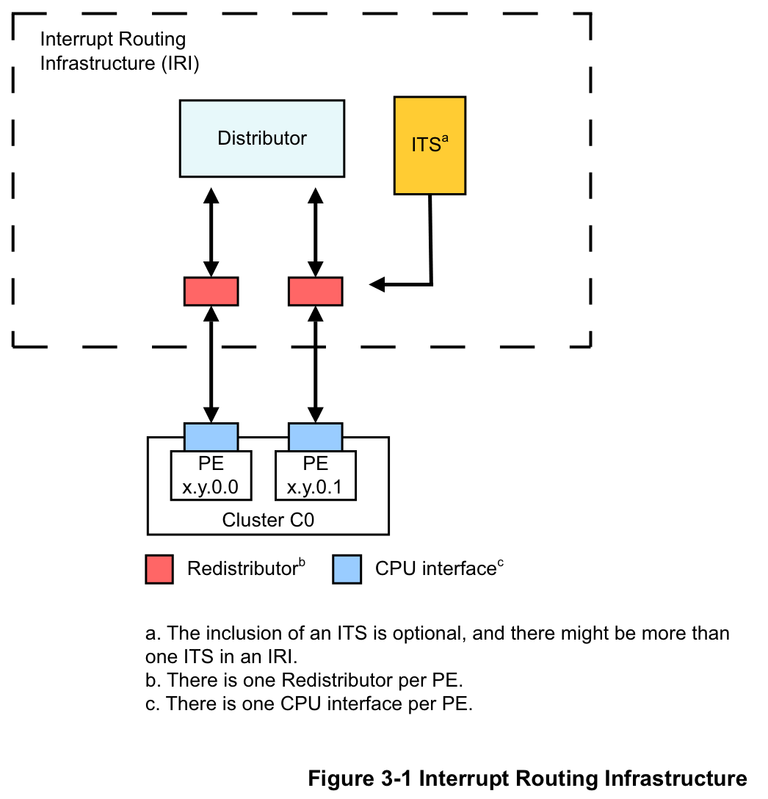
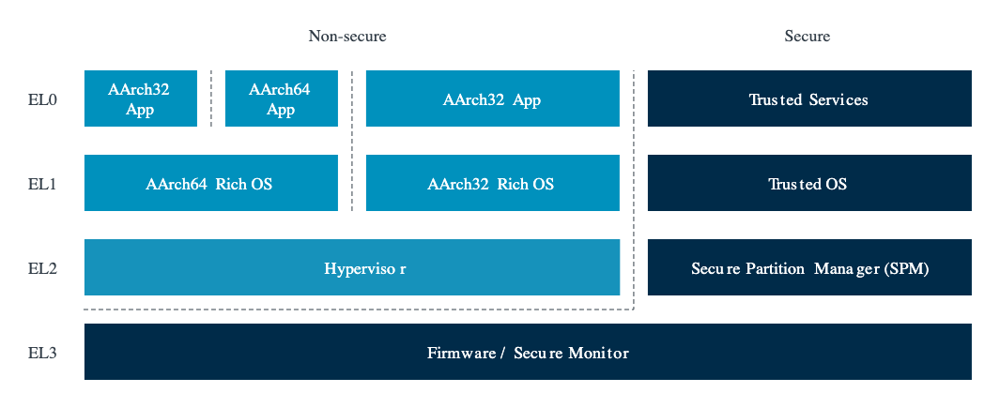
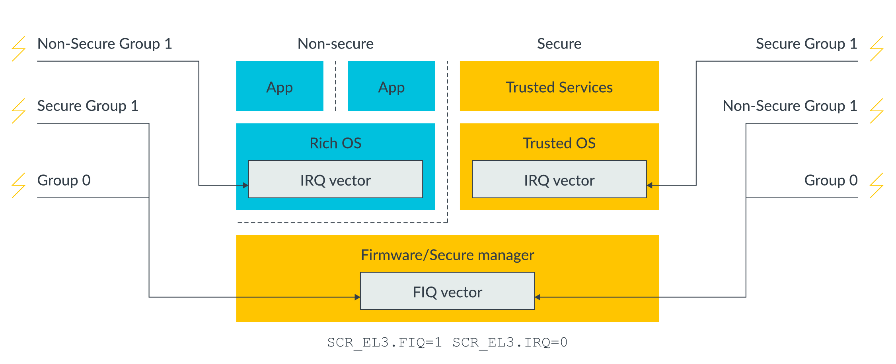
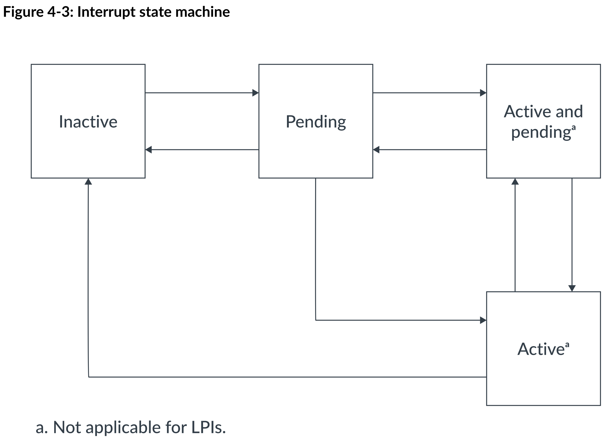
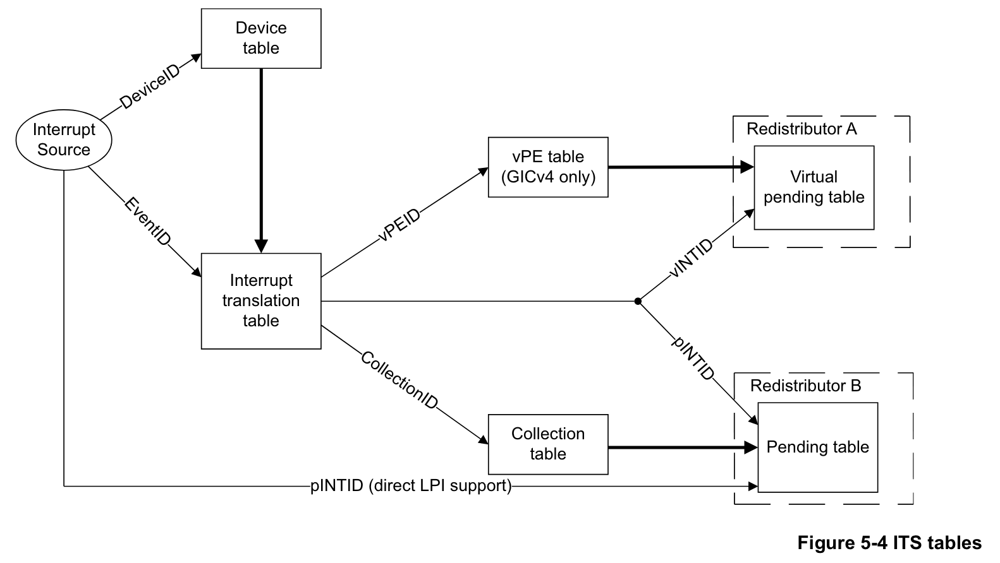
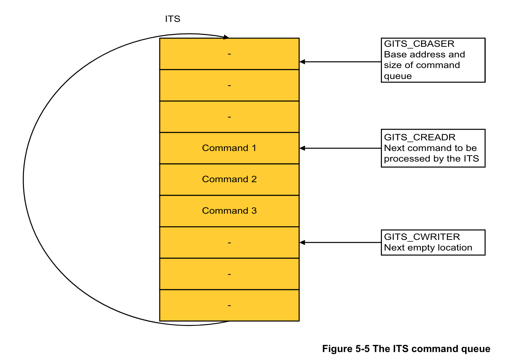

GICv3 基础知识与基于 GIC 部分直通的虚拟化中断支持
0. 前言与基本概念
0.0. 前言
GIC（Generic Interrupt Controller）是 ARM 架构中的中断控制器，负责处理中断管理、控制和分发等等。GIC 目前有四个版本，从 GICv1 到 GICv4，GICv3 是目前较为常用的版本。
0.1. GIC 的简介和构成

在逻辑上，GICv3 由以下几个主要组件构成：
-
Distributor（GICD）：全局共享一个的中断控制器，使用 MMIO 访问，负责处理设备中断（SPI）的分发和管理。GICD 维护着每一个设备中断的优先级、目标 PE 等等信息，并将中断分发给各个 GICR。
-
Redistributor（GICR）：每个 Cpu 核心（用术语来说是 PE，Processing Element）自身的中断控制器，负责处理从 GICD/ITS 分发来的中断、核间中断（SGI）以及 PE 私有的设备中断（PPI）。
GICR 是 MMIO 访问的设备，需要注意每个 PE 的 GICR 是有自己独立的 MMIO 地址范围的。
-
Cpu Interface：每个 PE 内部的一套系统寄存器（CSR），命名为
ICC_*，使用MSR/MRS指令访问。用于处理中断的 ACK、EOI 等高频操作。GICv3 的 GICR 和 Cpu Interface 共同取代了 GICv2 中的 Cpu Interface（GICC）。GICv3 有可能出于向前兼容的目的保留 GICC 的访问接口，但程序应该尽量使用 GICv3 的标准接口。相比于使用 MMIO 的 GICC，使用 CSR 的新 Cpu Interface 在性能上有着优势。
-
Interrupt Translation Service（ITS）：接收基于消息的中断（Message-Signaled Interrupts, MSI），根据其设备 ID 和事件 ID 将 MSI 转换为另一种类型的设备中断（LPI），并将其分发给 GICR。
ITS 是 GICv3 新增的组件，在 GICv2 中并不存在。一个系统中可能存在多个 ITS，每个 ITS 负责处理不同的设备中断。系统中也可能不存在 ITS，在这种情况下，LPI 将直接从设备发送到 GICR。
0.2. 中断的分类
GICv3 将中断分为 4 个主要的类别，每个类别的中断有不同的路径，并且有不同的中断号范围：
| 中断类别 | 说明 | 中断号范围 | 路径 |
|---|---|---|---|
| SGI | Software Generated Interrupts；软件生成的核间中断 | 0 – 15 | 从发送者 GICR 到接收者 GICR |
| PPI | Private Peripheral Interrupts；PE 私有外设产生的中断，主要是时钟等 | 16 – 31（扩展使用 1056 – 1119） | 从设备到 GICR |
| SPI | Shared Peripheral Interrupts；一般是普通非 PCIe 设备产生的中断 | 32 – 1019 （扩展使用 4096 – 5119） | 从设备到 GICD 再到目标 GICR |
| LPI | Locality-specific Peripheral Interrupts；来自基于消息的中断，主要是 PCIe 设备产生的中断 | 8191 – | 从设备到 ITS 再到目标 GICR |
无论哪种类型的中断，最终都会被分发到 GICR 中进行处理。Cpu 响应这些中断的流程也是基本一致的。
0.3. Affinity
GICv3 相比于 GICv2 的另一项重要改进是引入了 Affinity 的概念。Affinity 是 PE 的一个唯一标识符，由 4 个 8 位整数组成，格式为 <Aff3>.<Aff2>.<Aff1>.<Aff0>。较小的系统可能使用 0.0.0.x 或者 0.0.x.0 的编号，而较大的系统可能使用更加复杂的编号，例如 0.0.{0-3}.{0-3} 甚至是 0.{1,3,5,7}.{0-3}.{0-3}。不要假定 Affinity 的每一节都是连续的，也不要假定 Affinity 的每一节的含义和范围，这完全取决于芯片内部的设计。虽然相近的编号通常意味着 PE 位于同一个簇内，但具体的核心布局仍然需要参考芯片手册或者设备树中的信息。
相比于只支持 8 个目标 ID 的 GICv2，GICv3 支持的 PE 数量大大增加，也允许更加灵活地配置中断的目标。
0.4. 中断分组、安全状态与 FIQ
中断分组、安全状态和 FIQ 是 GICv3 中相互交织的几个概念。虽然在实际使用中可以忽视，但是了解这些概念有助于更好地理解 GICv3 的设计，也能避免很多错误。
安全状态（Security State）是 Aarch64 中引入的一个概念，是对异常等级（Exception Level, EL）的一种横向扩展，允许在同一 EL 中区分安全和非安全的状态。一般来说，实现了安全状态的 ARM 处理器会提供至少两个安全状态：Secure 和 Non-secure。Secure 状态下的代码可以访问 Secure 和 Non-secure 的地址空间，而 Non-secure 状态下的代码只能访问 Non-secure 的地址空间。EL0 到 EL2 都分为 Secure 和 Non-secure 两个状态，而 EL3 只存在 Secure 状态。

对于 GICv3 来说，安全状态的概念主要体现在中断的分组上。在支持并开启了安全状态的系统中，GICv3 中的中断可以分为三个组别：
- Group 0：应该在 EL3 处理的中断。
- Group 1 Secure：应该在 Secure EL2 或 Secure EL1 处理的中断。
- Group 1 Non-secure：应该在 Non-secure EL2 或 Non-secure EL1 处理的中断。
每一个中断都可以被配置为这 3 个组别中的一个（除了 LPI，LPI 只能是 Group 1 Non-secure）。每一个组别在 Cpu Interface 中都有单独的一套 CSR（少数公用除外）。中断的组别决定了中断的处理路径，也决定了中断以 IRQ 的方式还是以 FIQ 的方式处理。
FIQ（Fast Interrupt Request）原本是 ARM 处理器中的一个特殊的中断类型，具有更高的优先级和更快的响应时间，在物理上拥有独立于 IRQ 的信号线。在 Aarch64 中，FIQ 和 IRQ 已经没有本质上的区别，但仍然保留了独立的物理通路和单独的控制位，在异常向量表中也有单独的 FIQ 项。GICv3 利用 FIQ 和 IRQ 的区别来区分中断的安全状态。具体来说：
- 当运行在 Secure EL3 时，Group 0/1S/1NS 的中断会以 FIQ 的方式通知。
- 当运行在 Non-secure EL2/EL1/EL0 时，Group 1NS 的中断会以 IRQ 的方式通知，而 Group 0/1S 的中断会以 FIQ 的方式通知。
- 当运行在 Secure EL2/EL1/EL0 时，Group 1S 的中断会以 IRQ 的方式通知，而 Group 0/1NS 的中断会以 FIQ 的方式通知。
也就是说，如果一个中断是应该在当前安全状态和异常等级处理的中断，那么它会以 IRQ 的方式通知；如果是应该在其他安全状态或者 EL3 处理的中断，那么它会以 FIQ 的方式通知。这样的好处是，通过配置 SCR_EL3 系统寄存器，可以让 FIQ 进入 EL3 处理，而 IRQ 则进入 EL2/EL1 处理，这样可以实现 Secure/Non-secure 中断分离，同时不产生额外的异常等级切换。

对于不支持安全状态（换而言之，只有一个安全状态）的系统，或者关闭了 GICv3 的安全状态支持（通过设置 GICD_CTLR 寄存器的 DS 位）的系统，GICv3 仍然可以正常工作。此时只剩下 2 个组别：Group 0 和 Group 1，并且它们的区别不再具有安全的意义，而是纯粹的分类。Group 0 的中断会以 FIQ 的方式通知，而 Group 1 的中断会以 IRQ 的方式通知。
习惯上，不需要支持安全状态的系统应该将所有中断都配置为 Group 1。因为 FIQ 有可能被 EL3 保留自己使用（类似于 GICv2 中的情况），而 Group 1 的中断以 IRQ 的方式通知，可以正确地进入 EL2/EL1 处理。
0.5. 中断的状态流转

在 ARM 架构中，一个中断有 4 个可能的状态：
| 状态 | 描述 |
|---|---|
| Inactive | 中断未被触发，或者已经被处理完毕。 |
| Pending | 中断被触发，但还没有 PE 处理。 |
| Active | 中断正在被 PE 处理。 |
| Active and Pending | 中断正在被 PE 处理，另一个同样的中断已经被触发。 |
LPI 只有 Pending 和 Inactive 两个状态，Active 和 Active and Pending 状态不适用于 LPI。
1. GICv3 的中断配置和处理流程
要正确实现 GICv3 的虚拟化，首先必然要了解 GICv3 的中断配置和处理流程。这一章将简略介绍操作系统启动时应该如何初始化 GICv3，如何配置中断，以及如何处理各种类型的中断。为了简便，这里以不启用安全状态支持的系统为例。
1.0. 寻找当前 PE 的 GICR
在 GICv3 中，每个 PE 都有自己的 GICR，并且每个 GICR 都有自己独立的 MMIO 地址范围。因此，在访问当前核心的 GICR 之前，必须要找到当前 PE 的 GICR 地址。具体的做法是，每个 PE 都需要枚举系统中的每个 GICR，判断 GICR_TYPER 寄存器中记录的 Affinity 是否和当前 PE 通过读取 MPIDR_EL1 系统寄存器得到的 Affinity 相同，如果相同，则可以确定该 GICR 是当前 PE 的 GICR。
每个 GICR 占用连续的 128KiB 地址空间（0x20000）；不同 PE 的 GICR 地址范围可能是一个或者多个连续的块；连续的两个 GICR 的基址差值可能等于 0x20000，也可能大于 0x20000从而产生空洞（例如为了兼容 GICv4 的 256KiB GICR 大小而选择 0x40000）。DTB 中的 gicv3 节点会记录每块连续 GICR 地址范围的起始地址和大小，以及连续两个 GICR 的基址差值。同时，GICR_TYPER 寄存器中也有一个 Last 位，表示当前 GICR 是否是当前这块连续 GICR 地址范围的最后一个 GICR。有了这些信息，Cpu 就可以枚举 GICR 了，Rust 风格伪代码实例如下：
#![allow(unused)] fn main() { fn find_current_gicr_base() -> usize { // 读取当前 PE 的 Affinity let affinity = read_affinity_from_mpidr_el1(); // 获取连续 GICR 的基址差值 let stride = gicr_stride(); // 遍历每个 GICR 块 for gicr_block_base in gicr_blocks() { let mut gicr_base = gicr_block_base; loop { // 读取当前 GICR 的 GICR_TYPER 寄存器 let typer = read_gicr_typer(gicr_base); // 提取 GICR_TYPER 中的 Affinity let gicr_affinity = extract_affinity_from_gicr_typer(typer); if gicr_affinity == affinity { // 找到了当前 PE 的 GICR return gicr_base; } if extract_last_from_gicr_typer(typer) { // 到达当前 GICR 块的最后一个 GICR break; } // 移动到下一个 GICR gicr_base += stride; } } } }
实际上，大多数情况下，GICR 的地址范围是连续的，并且 GICR 之间的基址差值是 0x20000，在这种场景下只需要一个全局的 GICR 基址即可枚举出所有的 GICR。例如如果只想先在 Qemu 上运行，就可以先如此实现。
1.1. 设置 GICD 控制寄存器
GICD 控制寄存器（GICD_CTLR）用于配置 GICD 的基本行为，其中需要关心的位有：
- 控制 GICD 的安全状态支持的位（
DS位）：置位这个位则 GICD 将关闭对安全状态的支持。 - 控制 Affinity 路由的位（
ARE_S/ARE_NS位）：控制 GICD 使用 Affinity 还是旧有的目标 ID 进行中断路由。当支持安全状态时，Secure 和 Non-secure 状态有两个不同的位来控制 Affinity 路由。 - 控制组别中断的位（
EnableGrp0/EnableGrp1S/EnableGrp1NS位）：控制每一个组别中断的使能状态。每个组别中断的使能状态可以单独配置。
对于不需要支持安全状态的系统来说，应该置位 DS 位（当硬件不支持多个安全状态时 DS 位会被强制置位），并且置 EnableGrp1NS 位使能 Group 1 中断（当然，也可以先不使能，而是将其作为控制中断的开关，不过使用 DAIF 寄存器来控制中断会更方便）。如果要启用 Affinity 路由（推荐），则还需要置 ARE_S 位（注意在安全状态支持关闭时，控制 Affinity 路由的是 ARE_S 位）。
在修改完 GICD_CTLR 寄存器后，应该等待 GICD 的状态同步（通过读取位于 GICD_CTLR 寄存器第 31 位的 RWP 位来判断，为 1 时表示 GICD 正在同步状态，0 时表示同步完成）。
1.2. 通知 GICR Cpu 已启动
在启用高级电源管理功能时，有可能出现 Cpu 和 Cpu Interface 关闭，但 GICR 仍在运行的情况。为了避免 Bug，GICv3 规定在 Cpu 启动和关闭前都需要通知 GICR。具体来说：
- 在 Cpu 启动时，应该将
GICR_WAKER寄存器的ProcessorSleep位复位，表示当前 Cpu 已经启动。然后需要等待GICR_WAKER寄存器的ChildrenAsleep位变为 0。 - 在 Cpu 关闭时，应该将
GICR_WAKER寄存器的ProcessorSleep位置位，表示当前 Cpu 已经关闭。然后需要等待GICR_WAKER寄存器的ChildrenAsleep位变为 1。
显然，这里应该复位 ProcessorSleep 位，然后等待 ChildrenAsleep 位变为 0。
1.3. 配置 SGI、PPI 和 SPI 中断
接下来需要通过 GICR 和 GICD 配置 SGI、PPI 和 SPI 中断。LPI 中断的配置则在后文中单独介绍。
1.3.0. 概述
对 SGI、PPI 和 SPI 中断的配置都是通过读写 GICD 和 GICR 中的寄存器来完成的。下面所述的寄存器（如无特殊说明）在 GICR 和 GICD 中都存在，并且功能和定义都基本一致；GICR 的寄存器用于控制 PPI 和 SGI 中断，GICD 的寄存器用于控制 SPI 中断。这里需要配置的项目包括：
1.3.1. 打开/关闭中断
通过 ISENABLER 和 ICENABLER 寄存器来打开和关闭中断。
每个中断在这一对寄存器中都有一对对应的位，置位 ISENABLER 中的对应位打开中断，置位 ICENABLER 中的对应位关闭中断。
1.3.2. 清除 Pending 位
通过 ICPENDR 寄存器来清除中断的 Pending 位。
这是由于，在硬件复位时，每个中断的 Pending 位的值是未知的，因此在初始化时需要手动清除 Pending 位。对于每个中断都置位 ICPENDR 的对应位即可。
1.3.3. 配置分组
通过 IGROUPR 和 IGRPMODR 寄存器来配置中断的分组。
在不启用安全状态支持的情况下，需要将所有中断都配置为 Group 1，因此需要将 IGROUPR 的所有位都置为 1。IGRPMODR 寄存器只有在启用安全状态支持的情况下才有意义，这时可以忽略。
1.3.4. 配置触发方式
通过 ICFGR 寄存器来配置每一个中断的触发方式，包括边沿触发和电平触发。
在物理平台中，一个中断应有的触发方式取决于发送中断的物理设备的设计，DTB 中会记录这个信息，操作系统应该按照 DTB 中的信息来配置。
1.3.5. 配置优先级
通过 IPRIORITYR 寄存器来设置每一个中断的优先级。优先级的范围是 0 到 255，0 是最高优先级，255 是最低优先级。
需要注意具体的 GICv3 实现可能并不支持全部 256 个值，而是可能仅支持 2、4、8 或者 16 的倍数（亦即 128、64、32 或 16 个优先级）。GICv3 规定了至少支持 16 个优先级，因此在设置优先级时，应该优先使用 16 的倍数 0x00 ~ 0xF0。当前平台具体支持的优先级数量可以通过 ICC_CTLR_EL1 寄存器的 PRIBits 字段来查询。
1.3.6. 设置目标 PE
SGI 和 PPI 中断不需要设置目标 PE，因为它们是私有的中断，只会发送给当前 PE。如果没有特殊情况，SPI 中断的目标 PE 也不需要设置，因为它们会被 GICD 自动分发到某一个 GICR。只有在需要将 SPI 中断发送到特定的 GICR 时，才需要通过 GICD_ITARGETSR/GICD_IROUTER 寄存器来设置目标 PE，前者适用于未开启 Affinity 路由的情况，后者适用于开启 Affinity 路由的情况；前者使用用掩码指定目标 PE，后者则使用目标 PE 的 Affinity 值。
1.4. 启用系统寄存器接口、关闭 Bypass
在完成 GICD 和 GICR 的配置后，需要启用 GICv3 Cpu Interface 的系统寄存器接口（ICC_* 寄存器），并关闭 FIQ 和 IRQ 的 Bypass 功能。
FIQ 和 IRQ 的 Bypass 功能指的是绕过 GICD 和 GICR 内部对中断按组的和单独的使能控制，而直接将 FIQ 和 IRQ 的信号输入到处理器中。关闭 Bypass 功能可以确保 GICv3 的中断控制器能够正确地处理中断。Bypass 功能是可选的，显式地关闭 Bypass 功能可以确保 GICv3 的行为符合预期。
以上两者都可以通过当前 EL 的 ICC_SRE_ELx 寄存器来完成，将其 SRE 位置位可以启用系统寄存器接口，将 DIB 和 DFB 位置位可以关闭 FIQ 和 IRQ 的 Bypass 功能。
1.5. 启用中断
在完成以上步骤后，就可以启用中断了。在 GICv3 中，能够控制中断的有（作者已经发现的）：
- GICD/GICR 的
ISENABLER/ICENABLER寄存器：用于打开和关闭单个中断。上面已经设置过了。 GICD_CTLR寄存器的EnableGrp0/1S/1NS位：用于打开和关闭中断组别。上面已经设置过了。ICC_IGRPEN0_EL1/ICC_IGRPEN1_EL1寄存器：同样用于打开和关闭中断组别。要启用中断，必须将对应寄存器设置为 1。ICC_PMR_EL1寄存器：控制着当前 PE 的优先级屏蔽（Priority Mask），只有优先级高于该寄存器值的中断才能被处理。一般来说，应该将其设置为 0xFF（最低优先级），以允许所有中断。DAIF寄存器：用于控制中断的使能状态。复位F位可以使能 FIQ，复位I位可以使能 IRQ。对于操作系统，推荐使用DAIF寄存器作为全局的中断控制开关。
按照上文的流程，这里应该将 ICC_IGRPEN1_EL1 寄存器设置为 1，然后将 ICC_PMR_EL1 寄存器设置为合适的值（例如 0xFF，表明允许所有中断），最后复位 DAIF 寄存器的 I 位来使能 IRQ。此时，中断就可以进入到 Cpu 当中被处理了。
1.6. 中断处理流程
当中断到来时，Cpu 会进入到中断向量表中的对应入口。在上面的配置下，应该会进入到 Current EL 或者 Lower EL 的 IRQ 项之中。当进入中断处理例程后，操作系统应该从 GICR 的 ICC_IAR1_EL1 寄存器中读取当前中断的 ID，这个读取的操作也向 GICv3 表示当前中断已经被响应（ACK）。然后，操作系统可以根据中断 ID 来判断当前中断的类型和来源，并进行相应的处理。当处理结束后，操作系统应该将中断 ID 写入到 GICR 的 ICC_EOIR1_EL1 寄存器中，表示当前中断已经处理完毕（EOI），然后从中断处理例程中返回。
1.7. 配置 LPI 中断
LPI（Locality-specific Peripheral Interrupts）是 GICv3 中新增的一种中断类型，主要用于处理基于消息的中断（MSI），例如 PCIe 设备产生的中断。LPI 中断的处理和配置与 SGI、PPI 和 SPI 中断有所不同，并且相对而言更加复杂。这一节将介绍 LPI 中断的配置和处理流程，以及 ITS 的相关内容。
1.7.0. LPI 和 ITS 的内存区域
由于 LPI 中断数量可能非常高，具体数量也不确定，因此很多具体的 LPI 配置和状态信息无法像其他中断一样直接放到 GICD/GICR 的寄存器中，或是 ITS 的寄存器（GITS_*）中，而是要放在操作系统分配的普通内存区域中，再由操作系统将该区域的地址写入到对应的寄存器中供 GICv3 使用。
具体来说，需要分配的内存区域有：
- LPI 相关的区域：
- LPI 配置表（LPI Configuration Table）：存储每个 LPI 的配置信息，包括优先级和控制位。
- LPI 等待表（LPI Pending Table）：存储每个 LPI 的 Pending 状态。
- ITS 相关的区域：
- 设备表（Device Table）：保存设备 ID 和中断翻译表的对应关系。
- 中断翻译表（Interrupt Translation Table）：保存事件 ID 和中断号以及中断集合号的对应关系。
- 中断集合表（Interrupt Collection Table）：保存中断集合号和目标 GICR 的对应关系。ITS 本身可能能够存储一定大小的中断集合表，因此在某些情况下，可能不需要分配额外的内存区域给中断集合表。
- ITS 命令队列（ITS Command Queue）：保存 ITS 命令的环形队列。
以上内存区域的用法和配置方式会在后文中详细介绍。
1.7.1. ITS 的工作流程

如上文所说，ITS 是通过设备表、中断翻译表和中断集合表将 MSI 翻译为 LPI 的。ITS 的工作流程可以参考上图（最上方经过“vPE table”的是 GICv4 中引入的 LPI 虚拟化流程，可以忽略；最下方从中断源直接到 GICR 的是没有 ITS 的情况，也可以忽略），具体来说：
- 设备发送 MSI 到 ITS。ITS 得到设备 ID 和事件 ID。
- ITS 根据设备 ID 在设备表中查找对应的中断翻译表地址。
- ITS 根据事件 ID 在上一步找到的中断翻译表中查找对应的中断号和中断集合号。
- ITS 根据中断集合号在中断集合表中查找对应的目标 GICR。
- ITS 将对应的中断号发送给目标 GICR。
- GICR 根据 LPI 配置表中的信息，处理 LPI。
需要注意的是，设备表、中断翻译表和中断集合表的格式都是实现定义的，也就是说操作系统无法直接访问这些表，只能通过向 ITS 发送命令的方式来配置这些表中存储的映射关系。
1.7.2. ITS 命令队列
由于 ITS 能够接受的命令数量众多，通过普通的寄存器实现配置不太现实，因此 ITS 使用命令队列来接收和处理命令。ITS 命令队列是一个环形队列，放置在 64KiB 对齐的连续内存页中，每条命令占据 32 字节。操作系统申请了对应的内存后，需要将 ITS 命令队列的基址和大小写入到 ITS 的 GITS_BASER 寄存器中。ITS 命令队列有两个指针：一个是写指针（GITS_CWRITER 寄存器），操作系统向命令队列写入了命令之后，将写指针置于最后一条命令的后一个位置；另一个是读指针（GITS_CREADER 寄存器），ITS 处理完一条命令之后，将读指针置于下一条命令的位置。操作系统通过检查读指针是否追上写指针即可判断 ITS 是否已经处理完了所有命令。

关于 ITS 命令的格式和具体的命令内容，可以参考 ARM 官方文档。这里简单介绍一些常用的 ITS 命令：
MAPD DeviceID, ITT_addr, Size：将设备 ID 映射到中断翻译表地址。ITT_addr是中断翻译表的地址，Size代表了事件 ID 的范围。MAPTI DeviceID, EventID, pINTID, ICID：将设备 ID 和事件 ID 映射到中断号和中断集合号。pINTID是中断号，ICID是中断集合号。MAPI DeviceID, EventID, ICID：将设备 ID 和事件 ID 映射到中断集合号，使用 EventID 作为中断号。等价于MAPTI DeviceID, EventID, EventID, ICID。MAPC ICID, RDbase：指定中断集合号和目标 GICR 的映射关系。RDbase是目标 GICR 的基址。INV DeviceID, EventID/INVALL ICID：确保对应的缓存和 LPI 配置表中的内容一致。SYNC RDbase：确保和目标 GICR 有关的 ITS 命令的效果已经是全局可见的。
1.7.3. 设置设备表和中断集合表
设备表和中断集合表（以及这里不会介绍的 GICv4 引入的虚拟 PE 表）都属于 ITS 表（ITS Tables）的一种。ITS 提供了 8 个寄存器（GITS_BASER0 ~ GITS_BASER7）来配置 ITS 表的基址和大小。每个 GITS_BASER<n> 寄存器中有两个只读的字段，分别表示这个寄存器对应的表类型和每一项的大小。根据表项大小和中断数量，操作系统可以计算出表需要的空间，并分配对应大小的连续内存页，并且将分配的内存页的基址和大小写入到对应的 GITS_BASER<n> 寄存器中。
约定上，设备表使用 GITS_BASER0 寄存器；中断集合表（如果需要）使用 GITS_BASER1 寄存器。在配置之前，操作系统必须清零表中所有字节。完成配置之后，操作系统不需要（也不应该）手动修改设备表和中断集合表的内容，而是通过 ITS 命令来配置。
设备表和中断集合表是每个 ITS 一份的，如果系统中有多个 ITS，那么每个 ITS 都需要分配自己的设备表和中断集合表。
1.7.4. 设置中断翻译表
操作系统应该为每个连接到 ITS 上的设备申请一个中断翻译表，每个设备的中断翻译表的大小取决于设备的事件 ID 的数量以及 GITS_TYPER 寄存器中记录的每个事件 ID 占用的字节数。中断翻译表并不是通过 GITS 的寄存器来配置的，而是由操作系统通过 ITS 的 MAPD 命令将设备 ID 映射到中断翻译表的地址。
和设备表以及中断集合表一样，在配置之前，操作系统必须清零中断翻译表中的所有字节；在配置之后，操作系统不需要（也不应该）手动修改中断翻译表的内容，而是通过 ITS 命令来配置。
1.7.5. 设置 LPI 配置表
LPI 配置表是一个连续的 4KiB 对齐的内存区域。其具体大小取决于 LPI 的数量，每个 LPI 占用 1 字节，其中高 6 位代表其优先级的高 6 位（优先级的低 2 位固定为 0，也就是说 LPI 的优先级必然是 4 的倍数），最低位代表着 LPI 的使能状态（0 表示禁用，1 表示启用）。
LPI 配置表的地址需要写入到 GICR_PROPBASER 寄存器中。LPI 配置表是全局的，可能有硬件允许为不同的 GICR 设置不同的 LPI 配置表，但通常情况下，所有 GICR 都使用同一个 LPI 配置表。操作系统可以直接修改 LPI 配置表中的内容来配置 LPI 的优先级和使能状态。修改之后需要通过 ITS 的 INV/INVALL 命令来处理状态和缓存。
在没有 ITS 的情况下，LPI 配置表依然存在。
1.7.6. 设置 LPI 等待表
LPI 等待表是一个连续的 64KiB 对齐的内存区域。其具体大小取决于 LPI 的数量，每个 LPI 占用 1 个比特位，表示该 LPI 是否处于 Pending 状态。
LPI 等待表的地址需要写入到 GICR_PENDBASER 寄存器中。LPI 等待表是每个 GICR 独立的，操作系统需要为每个 GICR 分配独立的 LPI 等待表。操作系统不应该直接修改 LPI 等待表中的内容，而应该让 GICR 全权处理。
和 LPI 配置表一样，LPI 等待表在没有 ITS 的情况下依然存在。
1.7.7. 启用 ITS
在完成 ITS 的配置后，需要启用 ITS。可以通过设置 GITS_CTLR 寄存器的 Enable 位来启用 ITS。启用 ITS 后，ITS 将开始处理来自设备的 MSI，并将其转换为 LPI。
2. 基于 GICv3 的部分直通实现虚拟化
2.0. 如何实现 GICv3 虚拟化？
GIC 提供了对 Cpu Interface 的硬件辅助虚拟化支持（包括 GICv2 的 GICC_* 寄存器和 GICv3 的 ICC_* 寄存器；通过 GICH/GICV_* 和 ICH/ICV_* 寄存器实现）。然而，Distributor、Redistributor 和 ITS 是没有硬件辅助虚拟化的支持的；如果要实现虚拟化，必须要通过软件进行模拟。根据 ARM 的官方规范文档实现一个纯模拟的 GICv3 并非不可能，但实现起来非常复杂且性能可能有一定的问题。
如果仅需要运行一个 Guest，Hypervisor 完全可以将 Distributor、Redistributor 和 ITS 的访问接口直通给它，让 Guest OS 直接控制硬件 GIC，这样是可以正常工作的。但是如果需要运行多个 Guest，数个 Guest OS 对 Distributor 和 ITS 的访问就会产生冲突。如果能够想办法让不同 Guest OS 对 GICv3 的访问互不干扰，就可以实现 GICv3 的分区直通，这就是 GIC 部分直通（并非此文作者提出）方案的思路。
具体来说，当有如下保证时：
- 每个物理 Cpu 只归属于一个 Guest。
- 每个 Guest 的 GPA 空间和 HPA 空间都是无偏移的对等映射。
Hypervisor 就可以将 Guest 对 GICv3 的访问转发给物理 GICv3，仅做一些较小的拦截和修改：
- Cpu Interface：直接允许 Guest 访问 Cpu Interface 的 CSR（
ICC_*）。 - Redistributor：允许 Guest 访问 Redistributor 的大部分寄存器。只拦截对
GICR_PROPBASER的访问。 - Distributor：对 Guest 的访问进行筛查，允许 Guest 访问 Distributor 寄存器中它拥有的中断号所对应的部分。
- ITS：拦截 Guest 对 ITS 的访问，对 Guest 向 ITS 发送的命令进行转发。
2.1. Cpu Interface 的部分直通
由于 Cpu Interface 是每个 PE 独立的，因此在虚拟化时可以直接允许 Guest 访问 Cpu Interface 的 CSR（ICC_*）。注意这里不是让 Guest 访问硬件辅助虚拟化所提供的 ICV_* 寄存器，而是直接访问硬件 GICv3 的 ICC_* 寄存器。为此需要在 HCR_EL2 寄存器中关闭 IRQ 虚拟化（复位 IMO 位），并且不要设置 ICH_HCR_EL2 寄存器的 En 位。
2.2. Redistributor 的部分直通
Redistributor 同样是每个 PE 独立的，因此同样也可以直接允许 Guest 访问 Redistributor 的大部分寄存器。需要特殊处理的寄存器有 2 个：
-
GICR_PROPBASER：因为所有 GICR 的GICR_PROPBASER寄存器应该都指向同一个 LPI 配置表，所以 Guest 不应该修改这个寄存器的值。Hypervisor 应该在初始化时自己分配 LPI 配置表并写入到每个 GICR 的GICR_PROPBASER寄存器中。然而，这样的做法会导致 Guest 无法修改 LPI 的优先级和使能状态。为了解决这个问题，Hypervisor 可以有两种做法：
- 正确但麻烦的做法：在 Guest 设置
GICR_PROPBASER寄存器时，Hypervisor 取消掉 LPI 配置表所在内存页的映射。这样，Guest 对它的 LPI 配置表的修改会引发一个错误，Hypervisor 也就可以将 Guest 的修改同步到自己的 LPI 配置表中。 - 偷懒的做法：在 Guest 设置
GICR_PROPBASER寄存器时，Hypervisor 直接忽略这个设置。当 Guest 访问GICR_INVLPIR寄存器（当 ITS 不存在时用来同步对 LPI 配置表的修改的寄存器）或者发送MAPI/MAPTI命令时，Hypervisor 认为 Guest 一定是要启用对应的 LPI，因此将这个中断号在自己的 LPI 配置表中设置为使能状态。这样的做法显而易见地不正确，但是实践证明可以正确地运行包括 Linux 在内的 Guest OS。
- 正确但麻烦的做法：在 Guest 设置
-
GICR_TYPER：具体地说，是GICR_TYPER寄存器中的Last位。Last位表示当前 GICR 是否是连续 GICR 地址范围的最后一个 GICR。如果一个 Guest 的 PE 对应的是物理上的前几个 GICR，那么它就无法正确地停止枚举 GICR。为了解决这个问题，Hypervisor 应该拦截 Guest 对GICR_TYPER寄存器的访问，在 Guest 自己的最后一个 GICR 中将Last位置为 1。
对于其他的寄存器，Hypervisor 可以直接将 Guest 的 MMIO 访问转发给物理 GICR。
2.3. Distributor 的部分直通
Distributor 的情况比 Cpu Interface 和 Redistributor 要复杂一些。由于 Distributor 是全局的，所有 PE 都共享同一个 Distributor，因此 Hypervisor 需要对 Guest 对 Distributor 的访问进行筛查，具体来说：
- Hypervisor 应该保存一份 SPI 分配表，负责记录每一个 SPI 归属于哪一个 Guest。
- 对于
IIDR/TYPER/TYPER2等等只读的信息寄存器，Hypervisor 可以直接将 Guest 的 MMIO 访问转发给物理 GICD。 - 对于
CTLR控制寄存器，Hypervisor 应该阻止 Guest 的写操作，只允许读取。 - 对于其他寄存器，Hypervisor 应该根据寄存器的偏移量来判断 Guest 试图访问的中断号，结合 SPI 分配表来判断 Guest 是否有权访问。特别是如果访问的是每个中断仅占用不到一个字节的寄存器，需要计算出 Guest 可以访问哪些位，然后通过掩码来过滤掉 Guest 不允许访问的位。
2.4. ITS 的部分直通
在 GICv3 的所有组件中，ITS 的部分直通是最复杂的。原因在于，ITS 的命令队列、设备表和中断集合表都是操作系统分配的普通内存区域，而不是 GICv3 的寄存器。因此，多个 Guest OS 可能会多次尝试设置这些数据结构的地址，导致冲突。另外，多个 Guest OS 同时向 ITS 发送命令也会导致冲突。为了解决这些问题，Hypervisor 需要拦截 Guest 对 ITS 的全部操作，然后向物理 ITS 发出新的功能上等价的命令。
2.4.0. 内存区域处理
正如上面所说，Hypervisor 不能让 Guest 为 ITS 分配命令队列，设备表和中断集合表。因此，Hypervisor 必须自行分配这些内存区域，并将它们的地址写入到 ITS 的寄存器中，然后阻止 Guest 对 GITS_BASER<n> 和 GITS_CBASER 寄存器的写操作。由于操作系统无需也不能直接访问设备表和中断集合表，忽略操作系统自己分配的内存区域是安全的；不过需要记录下 Guest 写入的 GITS_CBASER 寄存器的地址，以便在 ITS 命令转发时使用。
至于中断翻译表，Hypervisor 可以允许 Guest 为每个设备分配自己的中断翻译表，因为中断翻译表是和设备 ID 绑定的，而设备 ID 又是硬件指定而非操作系统可控制的，所以只要不让同一个物理设备同时出现在两个 Guest 的 DTB 中，就可以避免 Guest 之间的冲突。
2.4.1. ITS 命令转发
Hypervisor 需要向 Guest 提供虚拟的 GITS_CBASER、GITS_CWRITER 和 GITS_CREADER 寄存器。Guest 向虚拟 GITS_CWRITER 写入值，说明 Guest 向 ITS 命令队列中写入了新的命令；此时 Hypervisor 可以通过虚拟 GITS_WRITER 和虚拟 GITS_READER 的差值来判断 Guest 写入了多少条命令，然后从 Guest 自行配置的命令队列（虚拟 GITS_CBASER 指向的 Guest 物理地址）中读取这些命令，然后将命令转发给物理 ITS。Hypervisor 应该等待物理 ITS 处理完所有命令后，更新虚拟 GITS_CREADER 的值为虚拟 GITS_CWRITER 的值，表示虚拟 ITS 已经处理完了所有命令。
首先需要注意的是，在以上过程中，应该用锁来避免多个 PE 同时访问物理 ITS 的命令队列，否则仍然会导致冲突。另一点需要注意的是，虽然设备 ID 和事件 ID 不会产生冲突，但是中断集合号是由 Guest OS 自行分配的，因此是可能产生冲突的（例如 Guest A 和 Guest B 都使用了中断集合号 0，分别指向自己的 0 号 GICR）。Hypervisor 应该在转发 ITS 命令时，检查中断集合号是否和其他 Guest 的中断集合号冲突，如果冲突，则需要将中断集合号转换为一个新的中断集合号，并更新 ITS 的中断集合表。
3. 参考资料
- Arm Architecture Reference Manual for A-profile architecture
- Arm Generic Interrupt Controller Architecture Specification GIC architecture version 3 and version 4
- Arm® Generic Interrupt Controller Architecture version 2.0
- Learn the architecture - Generic Interrupt Controller v3 and v4, Overview
- Learn the architecture - Generic Interrupt Controller v3 and v4, LPIs
- Learn the architecture - Generic Interrupt Controller v3 and v4, Virtualization
- Generic Interrupt Controller versions 3 and 4 - OSDev Wiki
- syswonder/hVisor @ GitHub
- arceos-hypervisor/arm_vgic @ GitHub